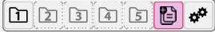
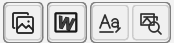
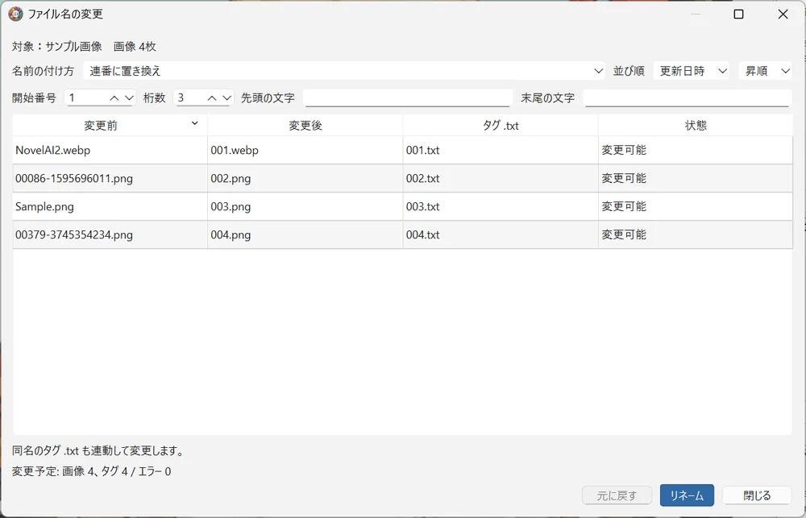
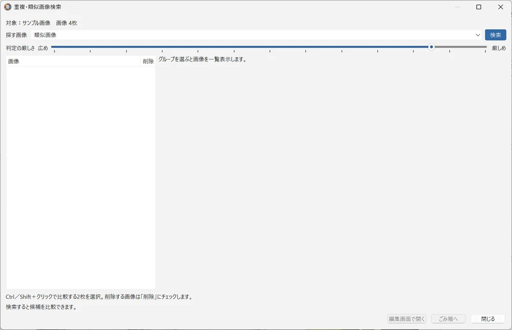

選別・ファイル整理
画像を見ながらキー1つでフォルダに振り分けたり、ファイル名をまとめて変更したり、重複・類似画像を探して整理したりできます。
選別＆ブックマーク

123
| 1登録先 1〜5 | 左クリック（または 1〜5 キー）で、登録したフォルダへ画像を移動／コピーします。右クリック（Ctrl+1〜5）でそのフォルダを開きます。EXEを登録した場合は、そのソフトで画像を開きます。 |
| 2移動／コピー | ONでコピー、OFFで移動。 |
| 3フォルダ設定 | 1〜5 に登録するフォルダやEXE（例：CLIP STUDIO）を設定します。 |
移動・削除時の確認メッセージは、設定の「画像削除・選別時の確認を省略する」で省略できます。
ツールバー右端のボタン

1234
| 1画像挿入 | 素材をキャンバスに挿入します（ペイントのページ参照）。 |
| 2透かし追加 | 文字・画像の透かしを追加します（ペイントのページ参照）。 |
| 3ファイル名の変更 | フォルダ内の画像とタグ .txt をまとめてリネームします。 |
| 4重複・類似画像検索 | フォルダ内の重複・類似画像を探して比較します。 |
ファイル名の変更

12345678| 1名前の付け方 | 連番に置き換え／元の名前の前に連番／後に連番／文字追加のみ。 |
| 2並び順 | 作成日時・更新日時・名前、昇順／降順。見出しクリックでも切り替えられます。 |
| 3開始番号・桁数 | 連番の開始値と桁数。 |
| 4先頭・末尾の文字 | 名前の前後に付ける文字。 |
| 5プレビュー | 変更前・変更後と、連動して変わるタグ .txt の名前を確認できます。 |
| 6状態 | 変更可能／変更なし／エラーなど。 |
| 7元に戻す | 直前のリネームを元に戻します。 |
| 8リネーム | プレビューどおりに変更します。拡張子は維持されます。 |
重複・類似画像検索

1234567| 1探す画像 | 重複画像（内容・画素が一致）／類似画像（似ている候補）。 |
| 2検索 | フォルダ内を検索します。保存済みのファイルが対象です。 |
| 3判定の厳しさ | 右ほど厳しく、左ほど候補を広く探します。 |
| 4グループ一覧 | 見つかった組み合わせ。ごみ箱へ移す画像の「削除」にチェックします。 |
| 5比較表示 | Ctrl／Shift＋クリックで2枚を選ぶと並べて比較できます（ホイールで拡大、左右連動）。同じ寸法なら違う箇所を赤く表示できます。 |
| 6編集画面で開く | 選んだ画像をメイン画面で開きます。 |
| 7ごみ箱へ | チェックした画像をごみ箱へ移します。 |
類似画像は「似ている候補」です。同じ画像であることを保証するものではないので、比較して確認してから削除してください。